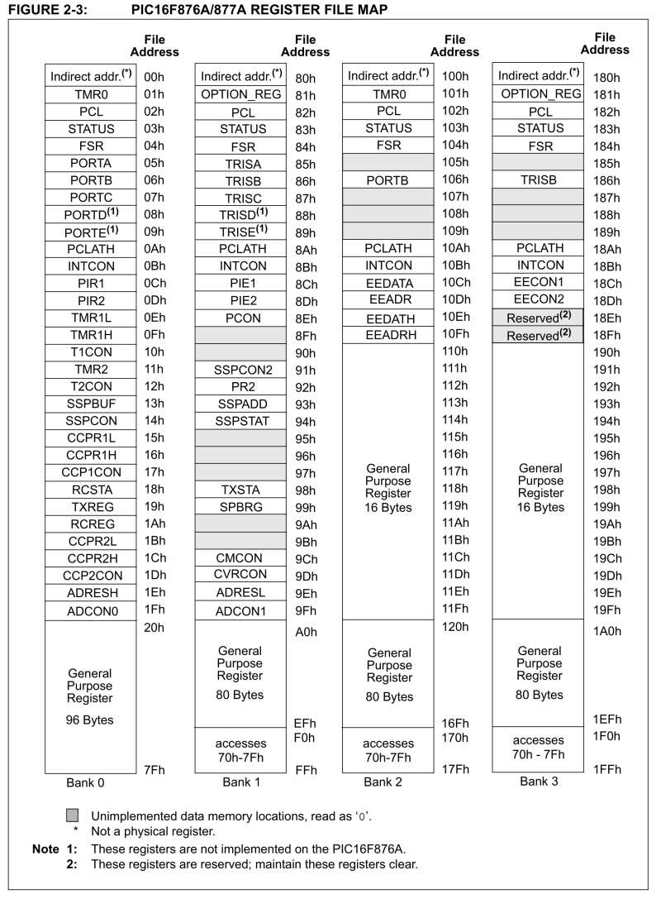

|
Ejercicio 2: E/S por programa (PIO)
mapeada en memoria
|
 |
1. Objetivo
El objetivo de este ejercicio es que el alumno escriba un driver de
dispositivo, en BASIC, que permita al PIC16F877A usar los puertos D y A para
controlar un display de 7 segmentos en el que vayan apareciendo, uno a uno y sin
solución de continuidad, todos los
dígitos del 0 al 9; esta visualización debe repetirse 10 veces.
2. Sistema de test
La configuración del sistema de pruebas simulador es la
mostrada en la siguiente figura:
El 16F877A usará los 8 bits del puerto paralelo de
E/S d para controlar (encendiendo o apagando segmentos individuales) el
valor representado en el Display 1 (el más a la izquierda) de la placa PicGenios
3. Control del display
Cada display consta de 8 elementos controlables (7 segmentos y un punto
decimal), organizados como muestra la figura:
En un sistema real el control del display se
realizaría conectando físicamente cada segmento a
una linea distinta del puerto de E/S; el segmento se enciende poniendo
la línea a 1,
y se apaga poniendo la linea a 0. En
PicSimLab estas conexiones están emuladas, y basta con poner a 1 el bit
correspondiente del puerto D, siempre que hayamos activado el display
poniendo a 1 la línea correspondiente del puerto A (ver la asignación
de líneas a displays y segmentos en el apartado 2.5 del documento que explica los
periféricos de la placa PicGenios).

Como el 16F877A usa E/S mapeada por memoria, los registros de datos
de entrada o salida asociados a los puertos D y A (es decir, los
latches
conectados a las lineas del puerto) se acceden a través de las
direcciones de memoria 08h y 05h. Para hacer
más legible el código, el compilador BASIC permite usar nombres
simbólicos (las variables especiales PORTD y PORTA) para referirse
a esas posiciónes de memoria.
Recordar que el compilador permite referenciar individualmente
cada bit del puerto A (de hecho, de cualquier registro con nombre), por
lo que, por ejemplo, la instrucción PORTA.0 = 1 pone
a 1 la linea menos significativa del puerto A (que NO es la que necesitamos para encender el display DIS1).
4. Uso del registro TRISx para especificar dirección de la E/S
Al igual que en el Ejercicio 1, es necesario usar los registros TRISx
(en este caso, TRISD y TRISA) para especificar la dirección de
las
líneas de E/S digital. Dado que el puerto A por defecto arranca
con las funcionalidades analógicas habilitadas, para esta
práctica es necesario también usar la directiva
All_Digital de PIC Simulator IDE al inicio del programa, de forma que
el puerto A opere como puerto de E/S digital.
5. Programa BASIC de ejemplo
Para ayudar en la puesta en marcha del ejercicio, se proporciona aquí un programa de ejemplo que visualiza en el display de 7 segmentos alternativamente un guión y un punto decimal.
Usarlo como base para desarrollar el programa que haga aparecer en el display todos los dígitos, de la forma requerida